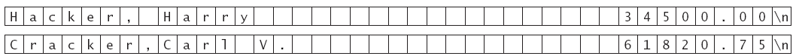

7. Потоци I
 Пренасочване на входния и изходния потоци.
Пренасочване на входния и изходния потоци.
C:\my\>myprog <
a_cin.txt
Вместо от клавиатурата, операционната
система пренасочва входа от текстов файл, в случая това е файла a_cin.txt.По този начин програмата
за намиране на броя на думите може намери броя на думите в текстов
файл (едно по-смислено приложение на тази програма).
C:\my\>myprog >
a_cout.txt
Вместо на екрана, операционната система
пренасочва изхода на текстов файл, в случая това е файла a_cout.txt.
// words.cpp
#include <iostream>
#include <string>
using namespace std;
int main()
{ int count = 0;
string word;
while (cin >> word) count++;
cout << count << " words.\n";
return 0;
}
Четене на редове:
// lines.cpp
#include <iostream>
#include <string>
using namespace std;
int main()
{ int count = 0;
string lines;
while (getline(cin, lines)) count++;
cout << count << " lines.\n";
return 0;
}
Четене на символи (букви, цифри и специални символи):
// chars.cpp
#include <iostream>
using namespace std;
int main()
{ int count = 0;
char ch;
while (cin.get(ch)) count++;
cout << count << " chars.\n";
return 0;
}
Четене и
запис в текстови файлове.
** Досега за четене от и запис във файлове - чрез пренасочване на
стандартните вход и/или изход със средствата на операционната
система
** В заглавния файл fstream
са дефинирани обекти, функции и операции за работа с файлове.
А) Четене от файл.
* дефиниране на файлова променлива за четене - обект от класа ifstream:
ifstream inp_data;
* отваряне на файл от текущата директория с име input.dat:
inp_data.open("input.dat");
* четене от файл на:
- цели числа и числа с плаваща точка
int n;
double x;
inp_data >> n
>> x;
- низове
string s;
inp_data >>
s; // чете до
разделител
getline(inp_data, s); //
чете цял ред
- символи
char ch;
inp_data.get(ch); // чете един символ
inp_data.unget(); // връща последния
прочетен символ в буфера
* затваряне на файл
inp_data.close();
Пример на цяла програма.
// readf.cpp
#include <iostream>
#include
<fstream>
/*
включване на заглавен файл */
#include <string>
using namespace std;
int main()
{ ifstream in_data; /*
дефиниране на файлова променлива за четене */
in_data.open("readf.txt"); /* отваряне на файла
readf.txt */
string s1, s2;
getline(in_data,
s1); /* четене на ред */
in_data >>
s2;
/*
четене на дума */
int n;
double x;
in_data >> n
>>
x; /*
четене на числови данни */
char ch;
while (!in_data.eof())
in_data.get(ch);
/* четене на символ */
in_data.close();
/*
затваряне на файла */
cout << s1
<< endl << s2 << " "
<<
n << " " << x << " " << ch <<
endl;
return 0;
}
Файл readf.txt:
many happy words
one_word 123
9.98 N |
many happy words
one_word 123
9.98 N |
// readfile.cpp
#include <string>
#include <iostream>
#include <fstream>
using namespace std;
int main()
{ cout << "Enter the file name: ";
string fname;
cin >> fname;
ifstream infile;
infile.open(fname.c_str());
if (infile.fail())
{ cout << "ERROR";
return
1;
}
int sum = 0;
while (!infile.eof())
{ char ch;
infile.get(ch);
if ('0' <= ch
&& ch <= '9') /* it was a digit */
{
infile.unget(); /* oops - didn't want to read it */
int n;
infile >> n; /* read integer starting with ch */
sum += n;
}
else cout
<< ch;
}
infile.close();
cout << "The sum is "
<< sum << endl;
return 0;
}
Б) Писане във файл.
* дефиниране на файлова променлива за писане - обект от класа ofstream:
ofstream out_data;
* отваряне на файл
out_data.open("output.dat");
* писане във файл с:
- изходен поток
int n = 2;
double x = 1.5;
string s = " Hello";
out_data << n
<< " " << x << s;
- член-функция
char ch = 'A';
out_data.put(ch);
* затваряне на файл
out_data.close();
Пример на цяла програма.
// writef.cpp
#include <iostream>
#include
<fstream>
/*
включване на заглавен файл */
#include <string>
using namespace std;
int main()
{ ofstream out_data; /*
дефиниране на файлова променлива за писане */
out_data.open("writef.txt"); /* отваряне на файла
writef.txt */
string s = "Hello";
out_data << s
<< endl; /* писане на низ */
int n = 5;
double x = 5.5;
out_data << n
<< " " << x << " "; /* писане на числови
данни */
char ch = 'T';
out_data.put(ch); /*
писане на символ */
out_data.close();
/*
затваряне на файла */
return 0;
}
Файл writef.txt:
// readwritefiles.cpp
#include <string>
#include <iostream>
#include <fstream>
using namespace std;
int main()
{ cout << "Enter the input file name: ";
string finame;
cin >> finame;
ifstream infile;
infile.open(finame.c_str());
if (infile.fail())
{ cout << "Error opening " << finame << endl;
return 1;
}
cout << "Enter the output file name: ";
string foname;
cin >> foname;
ofstream outfile;
outfile.open(foname.c_str());
if (outfile.fail())
{ cout << "Error opening " << foname << endl;;
return 1;
}
while (!infile.eof())
{ char ch;
infile.get(ch);
if ('0' <= ch && ch <= '9') /* it was a digit */
{ infile.unget(); /* oops - didn't want to read it */
int n;
infile >> n; /* read integer starting with ch */
outfile << n << endl;
}
else cout << ch;
}
infile.close();
outfile.close();
return 0;
}
Потоковата библиотека на С++ се състои от няколко класове,
свързани в следната йерархия:

* Обектите cin и cout са от класове, които са системно
зависими и нямат стандартни имена, но са производни класове
съответно на istream и ostream. Затова можем да дефинираме:
double read_data(istream& in);
и след това да извикаме функцията с параметри от различни
производни на istream класове: .
max = read_data(infile);
max = read_data(cin);
Пример:
// maxval2.cpp
#include <string>
#include <iostream>
#include <fstream>
using namespace std;
/**
Reads numbers from a file and finds the maximum value
@param in the input stream to read from
@return the maximum value or 0 if the file has no numbers
*/
double read_data(istream& in)
{ double highest;
double next;
if (in >> next) highest = next;
else return 0;
while (in >> next)
if (next > highest) highest = next;
return highest;
}
int main()
{ double max;
string input;
cout << "Do you want to read from a file? (y/n) ";
cin >> input;
if (input == "y")
{ string filename;
cout << "Please enter the data file name: ";
cin >> filename;
ifstream infile;
infile.open(filename.c_str());
if (infile.fail())
{ cout << "Error opening " << filename << "\n";
return 1;
}
max = read_data(infile);
infile.close();
}
else max = read_data(cin);
cout << "The maximum value is " << max << "\n";
return 0;
}
Низови
(текстови) потоци.
В езика С++ има възможност да се чете/пише от/в
низове вместо да се използват стандартни устройства или файлове. В
заглавния файл sstream
са дефинирани обекти, функции и операции за работа с текстови
потоци.
* Входен поток - с обект от клас istringstream.
string input = "January 23, 1881";
istringstream instr(input);
string month;
int day;
string comma;
int year;
instr >> month >> day
>> comma >> year;
* Изходен поток - с обект от клас ostringstream.
ostringstream outstr;
outstr << setprecision(8)
<< sqrt(2);
string output = outstr.str();
Пример: Преобразуване на момент от време в низ. В САЩ има
два формата за записване на време с разлика в часовете:
- am/pm - денонощието започва с 12 am следват 1-11 am, 12 pm
и 1-11 pm.
- military - часовете са от 00 до 23.
// readtime.cpp
#include <iostream>
#include <sstream>
using namespace std;
string int_to_string(int n)
{ ostringstream outstr;
outstr << n;
return outstr.str();
}
void read_time(int &hours, int
&minutes)
{ string line;
getline(cin, line);
istringstream instr(line);
instr >> hours;
minutes = 0;
char ch;
instr.get(ch);
if (ch == ':') instr >>
minutes;
else
instr.unget();
string suffix;
instr >> suffix;
if (suffix == "pm") hours +=
12;
}
string time_to_string(int hours, int
minutes, bool am_pm)
{ string suffix;
if (am_pm)
{ if (hours < 12) suffix =
"am";
else { suffix =
"pm"; hours -= 12; }
if (hours == 0)
hours = 12;
}
string result =
int_to_string(hours) + ":";
if (minutes < 10) result =
result + "0";
result = result +
int_to_string(minutes);
if (am_pm) result = result + "
" + suffix;
return result;
}
int main()
{ cout << "Please enter the
time: ";
int hours, minutes;
read_time(hours, minutes);
cout << "Using
am/pm: " << time_to_string(hours, minutes,
true) << "\n";
cout << "Military time:
" << time_to_string(hours, minutes, false) <<
"\n";
return 0;
}
Please enter the time:
10:20 pm
Using am/pm:
10:20 pm
Military time: 22:20 |
В) Четене и писане във файл - пряк (произволен) достъп.
Последователен достъп означава, че можем да четем/пишем от/във файл
само последователно - елемент след елемент, байт след байт.
Сега бихме искали да можем да четем и пишем на всяко място във
файла, което се нарича пряк или произволен достъп.

За тази цел за всеки файл са дефинирани две срециални позиции:
- get - позиция за четене,
- put - позиция за писане.
Можем да преместваме тези позиции относно три константи,
дефинитани в класа ios (базов клас за потоковите класове
istream и ostream):
- ios::beg - начало на файла;
- ios::end - край на файла;
- ios::cur - текуща позиция
с процедурите seekg и seekp. Например:
fs.seekg(n, ios::beg);
fs.seekp(n, ios::beg);
преместват позицията с n байта от началото на
файла fs. Текущата позиция се получава така:
n = fs.tellg();
n = fs.tellp();
Тези функции връщат тип long. Дължината на файл
можем да получим по следния начин:
fs.seekg(0, ios::end);
long file_length = fs.tellg();
Когати използваме пряк достъп, трябва да внимаваме за
формата на данните във файла. Например нека имаме файл с данни за
служители:
и искаме да увеличим заплатата на Хари с 5.5%. Получаваме
36397.50 и ако запишем новата заплата във файла, получаваме:

което поврежда следващия запис. Затова се използват записи
(логически единици от данни) с фиксирана дължина.

* дефиниране на файлова променлива за четене и писане - обект от
класа fstream:
fstream io_data;
* отваряне на файл, четене и писане - както са описани по-горе.
* Пример: Програма за четене и писане във файла employee.dat
// database.cpp
01: #include <iostream>
02: #include <iomanip>
03: #include <fstream>
04: #include <sstream>
06: using namespace std;
07:
08: #include "ccc_empl.cpp"
09:
10: const int NEWLINE_LENGTH = 2; /* 2 for Windows or 1 on Unix */
11: const int RECORD_SIZE = 30 + 10 + NEWLINE_LENGTH;
13: /**
14: Converts a string to a floating-point value, e.g.
15: "3.14" -> 3.14.
16: @param s a string representing a floating-point value
17: @return the equivalent floating-point value
18: */
19: double string_to_double(string s)
20: { istringstream instr(s);
22: double x;
23: instr >> x;
24: return x;
25: }
27: /**
28: Raises an employee salary.
29: @param e employee receiving raise
30: @param percent the percentage of the raise
31: */
32: void raise_salary(Employee& e, double percent)
33: { double new_salary = e.get_salary() * (1 + percent / 100);
35: e.set_salary(new_salary);
36: }
38: /**
39: Reads an employee record from a file.
40: @param e filled with the employee
41: @param in the stream to read from
42: */
43: void read_employee(Employee& e, istream& in)
44: { string line;
46: getline(in, line);
47: if (in.fail()) return;
48: string name = line.substr(0, 30);
49: double salary = string_to_double(line.substr(30, 10));
50: e = Employee(name, salary);
51: }
53: /**
54: Writes an employee record to a stream
55: @param e the employee record to write
56: @param out the stream to write to
57: */
58: void write_employee(Employee e, ostream& out)
59: { out << e.get_name()
61: << setw(10 + (30 - e.get_name().length()))
62: << fixed << setprecision(2)
63: << e.get_salary() << "\n";
65: }
67: int main()
68: { cout << "Please enter the data file name: ";
70: string filename;
71: cin >> filename;
72: fstream fs;
73: fs.open(filename.c_str());
74: fs.seekg(0, ios::end); /* go to end of file */
75: int nrecord = fs.tellg() / RECORD_SIZE;
76:
77: cout << "Please enter the record to update: (0 - "
78: << nrecord - 1 << ") ";
79: int pos;
80: cin >> pos;
81:
82: const double SALARY_CHANGE = 5.0;
83:
84: Employee e;
85: fs.seekg(pos * RECORD_SIZE, ios::beg);
86: read_employee(e, fs);
87: raise_salary(e, SALARY_CHANGE);
88: fs.seekp(pos * RECORD_SIZE, ios::beg);
89: write_employee(e, fs);
90:
91: fs.close();
92: return 0;
93: }